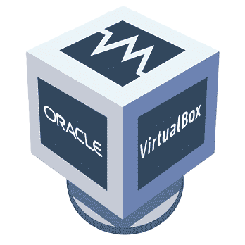
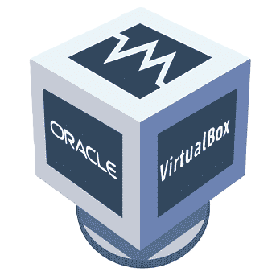

Matteo LEMEE
Bienvenue sur mon portfolio
A PROPOS DE MOI
Bonjour ! je m'appelle Matteo, je suis étudiant en informatique. Après mon BAC STMG j'ai voulu continuer mes études dans le domaine de la cybersécurité. Je me suis donc orienté vers un BTS SIO (Services Informatiques aux Organisations). Je suis actuellement au lycée Gustave Flaubert de Rouen 🗺️ en deuxième année. Après le premier trimestre, je me suis rendu compte que j'aimais bien la cybersécurité, mais pas suffisamment pour envisager une carrière dans ce domaine. Ce premier trimestre ma également permis de découvrir et de développer une passion pour le développement informatique. C'est pourquoi j'ai choisi l'option SLAM (Solutions Logicielles et Applications Métiers) qui est une option spécialisée dans le développement .
BTS SIO
Spécialité SISR
Le BTS SIO option Solutions d'Infrastructure, Systèmes
et réseaux (SISR) permet d'acquérir
des compétences
dans
la mise à disposition de services informatiques, l'administration
des systèmes et
des réseaux, ainsi que
dans la cybersécurité des
services informatiques. Les débouchés sont :
- Administrateur/trice réseaux
- Technicien/ne de maintenance
- Technicien/ne de télécoms et réseaux
- Etc..
Spécialité SLAM
Le BTS SIO option Solutions Logicielles et Applications
Métiers (SLAM) permet d'acquérir des
compétences
dans la conception et le développement d'application,
le support
et la mise à disposition de services informatiques,
ainsi que dans la cybersécurité des
services informatiques.
Les débouchés sont :
- Développeur/euse informatique
- Développeur/euse d'applications mobiles
- Administrateur/trice de bases de données
- Etc..
EPREUVES
COMPETENCES
OUTILS

 

PARCOURS
PASSIONS
BTS SIO option SLAM
Lycée Gustave Flaubert - 76 Rouen
2023 - 2025
DEVELOPPEMENT WEB
Le développement web n'est pas seulement mon travail.
C'est aussi une de mes plus grandes passions.
BAC STMG option GESTION-FINANCE
Lycée Louise Michel - 27 Gisors
Mention Assez Bien
2020 - 2023
CINEMA / SERIES
Je suis un vrai passionné de cinéma et de séries.
C'est l'activité que je fais le plus sur mon
temps libre.
STAGES
STAGE CS Lane
2024 - 5 semaines
Stage de première année de BTS.
J'ai du développer un ENT pour les écoles
du Montessori.
Site internet : https://cslane.com/
Plus de détails concernant le stage
STAGE Attineos
2025 - 5 semaines
Stage de deuxième année de BTS.
J'ai travaillé sur le développement d'un projet
web interne.
Site internet : https://www.attineos.com/
Plus de détails concernant le stage
MES PROJETS
Vous trouverez sur cette page les différents projets que j'ai réalisés au cours de mes études, ou des
projets personnels.
Application de gestion des stocks
Il s'agit d'une application développée en Java pour une entreprise fictive nommée EasyBee. L'objectif de cette application est d'améliorer le processus d'approvisionnement du magasin de l'entreprise. Cette application utilise une base de données MySql.
Voir le projetSite vitrine
Il s'agit d'un site vitrine, développé en début de première année, pour l'entreprise fictive Sloom. Le site est développé en HTML, CSS et utilise Bootstrap. Sur ce site on peut retrouver la présentation de l'entreprise, les services qu'elle propose, ainsi que les moyens de la contacter.
Application web
Il s'agit d'une application web de gestion de réservations pour l'entreprise fictive Sloom. Les technologies utilisées sont PHP en MVC, avec une base de données MySql.
Voir le projetPortfolio
Le portfolio sur lequel vous êtes actuellement a été mon premier projet personnel. J'ai créé et modifié ce portfolio tout au long de ma première année, en utilisant HTML, CSS et Bootstrap.
Voir le projetQU'EST-CE QUE LA VEILLE TECHNOLOGIQUE ?
La veille technologique consiste à surveiller les évolutions techniques,
les innovations, dans un secteur d’activité.
La veille technologique comprend
notamment la surveillance, la collecte, le partage et la diffusion d’information
permettant
d’anticiper ou de s’informer sur des changements en matière de recherche, développement, brevet,
lancement de nouveaux produits, matériaux, processus, concepts, innovation de fabrication, etc….
Cela a pour but d’évaluer l’impact sur l’environnement et l’organisation.
Dans le cadre de mon BTS, j'ai dû réaliser une veille technologique sur un sujet précis.
LES OUTILS DE MA VEILLE
J’ai effectué ma veille technologique grâce à des agrégateurs de flux RSS, comme Feedly ou Google
alertes.
Cela me permet de recevoir automatiquement différents articles par mail, sur le sujet que
j’ai
choisi grâce à des mots clés.
Les mots clés que j'ai utilisés sont "IA" et "intelligence
artificielle". J'ai configuré
les agrégateurs de flux de manière à recevoir
des articles tous les jours.
J’ai ensuite stocké les articles qui m'intéressent dans un tableur,
avec leur nom, leur date et le
lien de l’article.
Définition : l'intelligence artificielle générative fait référence à l'utilisation de
l'IA pour créer de nouveaux contenus, comme du texte, des images, de la musique, des
vidéos, etc...
Développement informatique :
L'ascension de l'intelligence articifielle (IA) ces dernières années a suscité des
questionnements sur son impact dans divers domaines,
notamment dans celui du développement informatique.
Les avantages :
L'intelligence artificielle offre la possibilité d'automatiser certaines tâches
fastidieuses et répétitives dans le développement.
Des processus tels que la génération de code, la correction d'erreurs et la détection de
vulnérabilités peuvent être améliorés grâce à des algorithmes d'IA.
Cela fait gagner un temps considérable aux développeurs afin qu'ils puissent se
concentrer sur des aspects plus créatifs et stratégiques du développement.
L'IA peut également générer des images ou des vidéos pour répondre aux besoins des
développeurs.
Une autre utilisation clé de l'IA dans le développement est l'analyse du comportement
des utilisateurs. En recueillant ces informations, cela aide les développeurs à mieux
comprendre les besoins et les préférences des utilisateurs afin qu'ils puissent adapter
leurs stratégies en conséquence.
L'intelligence artificielle joue également un rôle important dans la sécurité des
logiciels / applications. En effet, elle aide à détecter et à prévenir les
cyberattaques, ce qui est essentielle
dans un monde où les menaces de sécurité sont en constante évolution. Enfin, l'IA offre
uen meilleur planification et estimation du budget.
Les inconvénients :
Cependant, l'IA ne génère pas toujours des outils performants. En effet, les logiciels /
applications créés entièrement avec l'intelligence artificielle sont souvent peu
efficaces, peu optimales et ne répondent pas au
contexte et aux besoins des utilisateurs.
src : https://www.zindex.fr/lia-et-le-developpement-web/
04 / 01 / 24, Emilie Cazaux
src : https://www.aicrafters.com/revolution-du-developpement-web-avec-lia-generative/
23 / 02 / 24
src : https://tw3partners.fr/fr/ia-developpement-web/
26 / 03 / 24
src : https://globalowls.com/fr/artificial-intelligence-is-revolutionizing-software-development/
14 / 04 / 24, Vanessa Venugopal
Le futur des développeurs :
Comme nous avons pu le voir précédemment, l'intelligence artificielle peut s'avérer être
très utile en réalisant de nombreuses tâches.
Mais va-t-elle réellement remplacer les développeurs ?
Il est important de souligner que l'IA est seulement un outil complémentaire, pas un
substitut. En effet, l'IA ne peut pas remplacer la créativité et l'intuition
humaines. Il y a également toute la partie collaboration et échange entre les différents
acteurs, qui ne peut pas être réalisé par une IA. De plus, il faut savoir que l'IA
générative se base sur des données déjà existantes. Donc si ces données sont fausses ou
obsolètes,
notre code le sera aussi. Les développeurs doivent donc avoir des compétences solides
afin de vérifier que le code généré par l'IA est correct.
src : https://tw3partners.fr/fr/ia-developpement-web/
26 / 03 / 24
src : https://www.directimpactsolutions.com/fr/lia-remplacera-t-elle-les-programmeurs/
09 / 02 / 24, Eleanor Fulton
src : https://www.eni-service.fr/intelligence-artificielle-des-outils-et-des-perspectives-pour-les-developpeurs/
31 / 01 / 24
Situation professionnelle :
Cas concret : Génération de code avec l'ia dans une startup de développement
d'applications mobiles
Dans une startup travaillant sur des applications mobiles, l'équipe de développement
adopte un outil d'IA générative
comme GitHub Copilot pour accélérer le développement de fonctionnalités spécifiques.
Mise en oeuvre :
Lors du développement d'une application de livraison, les développeurs doivent
implémenter une fonctionnalité de calcul des frais de livraison en fonction de la
distance et du poids.
Les développeurs saisissent des descriptions de la fonctionnalité ou des commentaires
dans leur environnement de codage.
L'IA génère automatiquement des extraits de code correspondant à la logique demandée,
comme une fonction Python pour calculer les frais.
Ensuite, les développeurs examinent et modifient les suggestions générées pour s'assurer
qu'elles respectent les normes de l'entreprise et qu'elles sont optimisées pour les
besoins spécifiques de l'application.
Si des erreurs ou des incohérences sont détectées, ils corrigent le script fourni par
l'IA.
Résultats :
- Gain de productivité : Les développeurs réduisent le temps consacré à la rédaction de
code répétitif ou de fonctions courantes.
- Amélioration de la qualité : L'IA propose des solutions conformes aux bonnes pratiques
de développement, réduisant les risques de bugs.
- Focus sur l'innovation : L'équipe peut se concentrer sur l'élaboration de concepts
uniques et sur la résolution de problèmes complexes, plutôt que sur des tâches de base.
Avantages pour l'équipe :
- Réduction des erreurs humaines : L’IA aide à détecter des erreurs potentielles dès la
phase de développement.
- Formation intégrée : Les développeurs juniors apprennent plus rapidement en étudiant
le code suggéré par l’IA, qui inclut souvent des exemples bien structurés.
- Collaboration simplifiée : Les membres de l'équipe bénéficient d'un référentiel commun
de solutions proposées par l'IA, facilitant les revues de code.
Limites :
- Vérification obligatoire : Les développeurs doivent valider et ajuster le code généré
pour éviter des failles ou des inefficacités.
- Adaptabilité limitée : Pour des besoins très spécifiques ou des architectures
complexes, l'IA peut ne pas fournir de solutions optimales.
src : https://www.hostinger.fr/tutoriels/comment-utiliser-github-copilot
26 / 09 / 2024, Chaimaa Chakir
Je n'ai pas encore effectué ma veille de deuxième année.
CONTACT
lemeematteo27@gmail.com
(+33) 07 71 25 55 51
76000 Rouen
Permis B